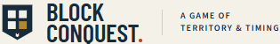
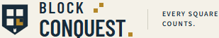
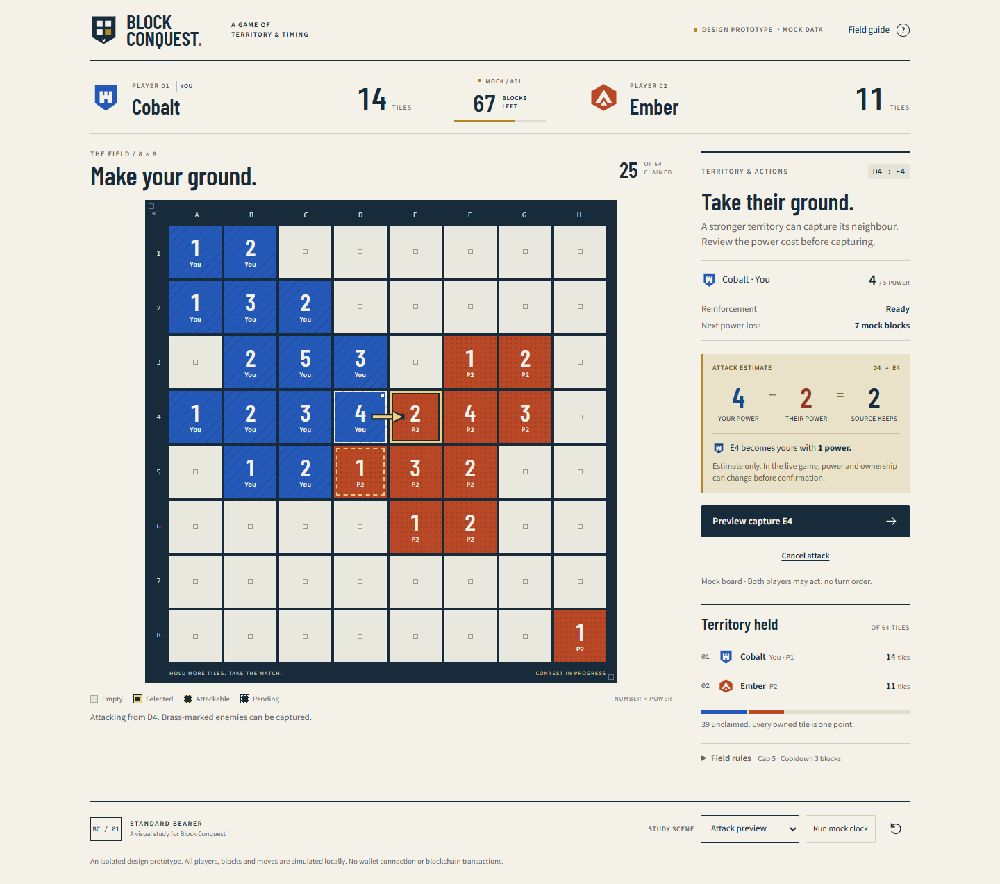
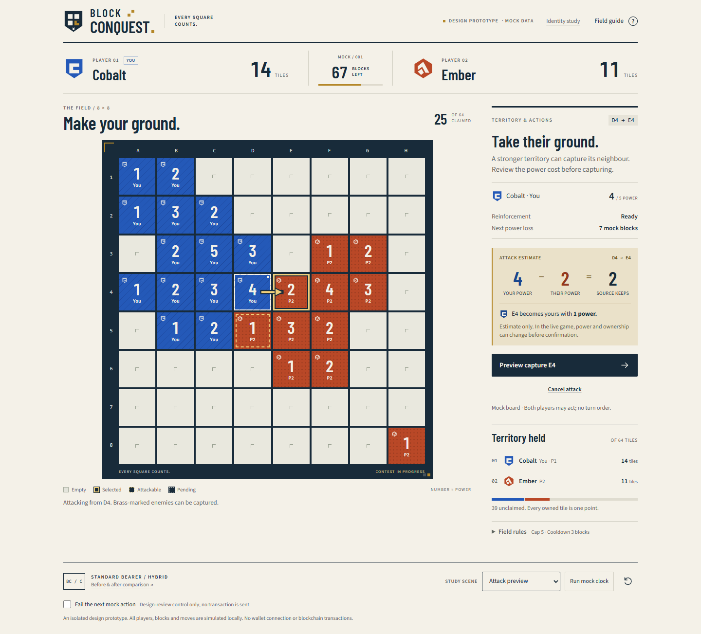
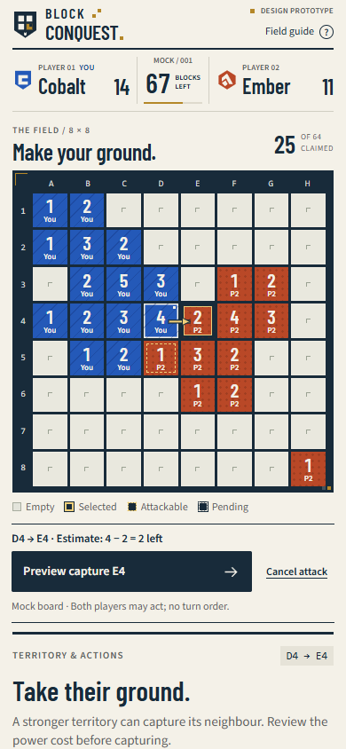
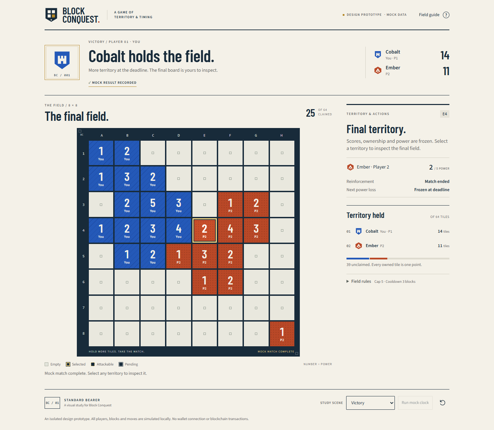
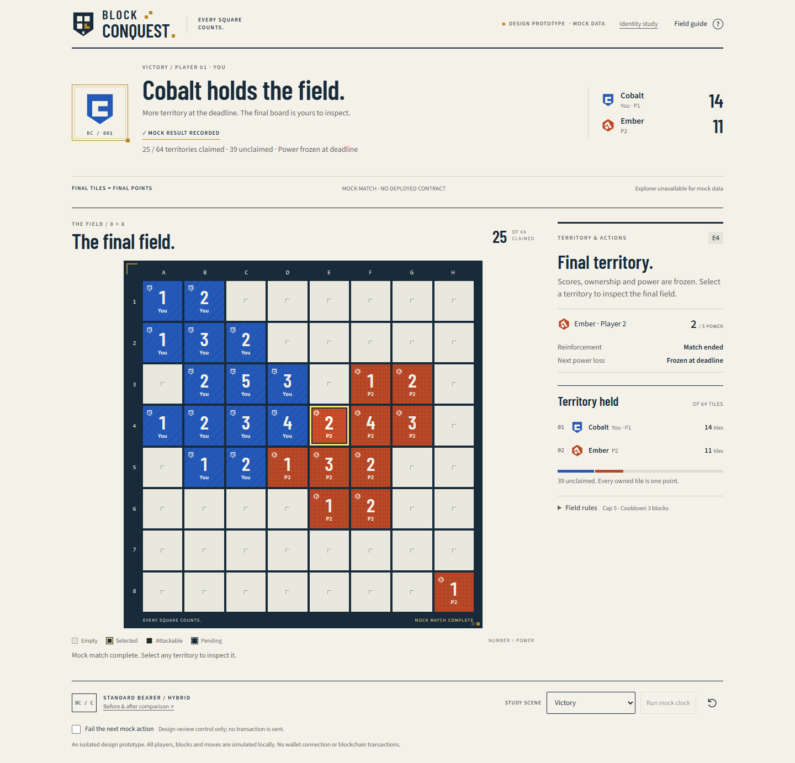
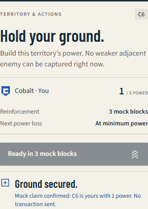
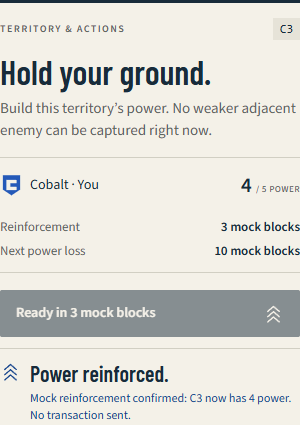
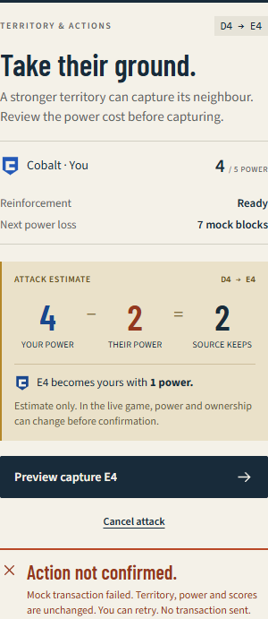

STANDARD BEARER + A DISTINCTIVE GAME PERSONALITY
The same field.
A stronger signature.
The approved ivory, navy, cobalt and terracotta foundation stays. These comparisons show the earlier Phase 2 prototype beside the hybrid refinement, using the same mock attack and viewport sizes.
01 / Brand signature
A tighter wordmark, the stepped-square motif and an identifiable territory shield. The condensed type and editorial tone remain.


02 / Desktop attack preview
Consistent player crests, a signed board frame and an action-specific feedback area. The power-cost estimate remains central and is still labelled as an estimate.


03 / Mobile, 390px
The compact scoreboard and one shared action dock are preserved. No fixed bottom overlay or second primary button is introduced.

04 / A recorded result
The final score is explicitly the territory count. Match status, frozen board and mock provenance are visible; there is no invented rematch button or misleading explorer link.


05 / Deliberate action feedback
Different confirmations for claiming, reinforcement and capture. A failed action preserves the board and offers a retry. These are local mock states, not blockchain receipts.


